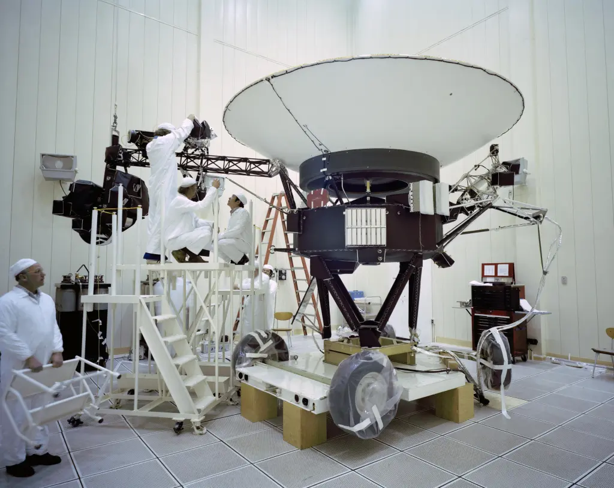
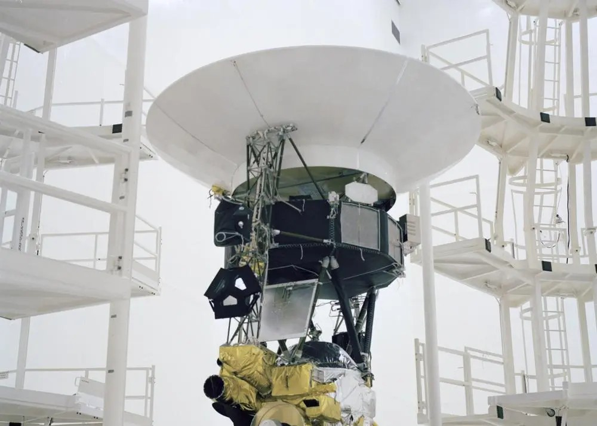
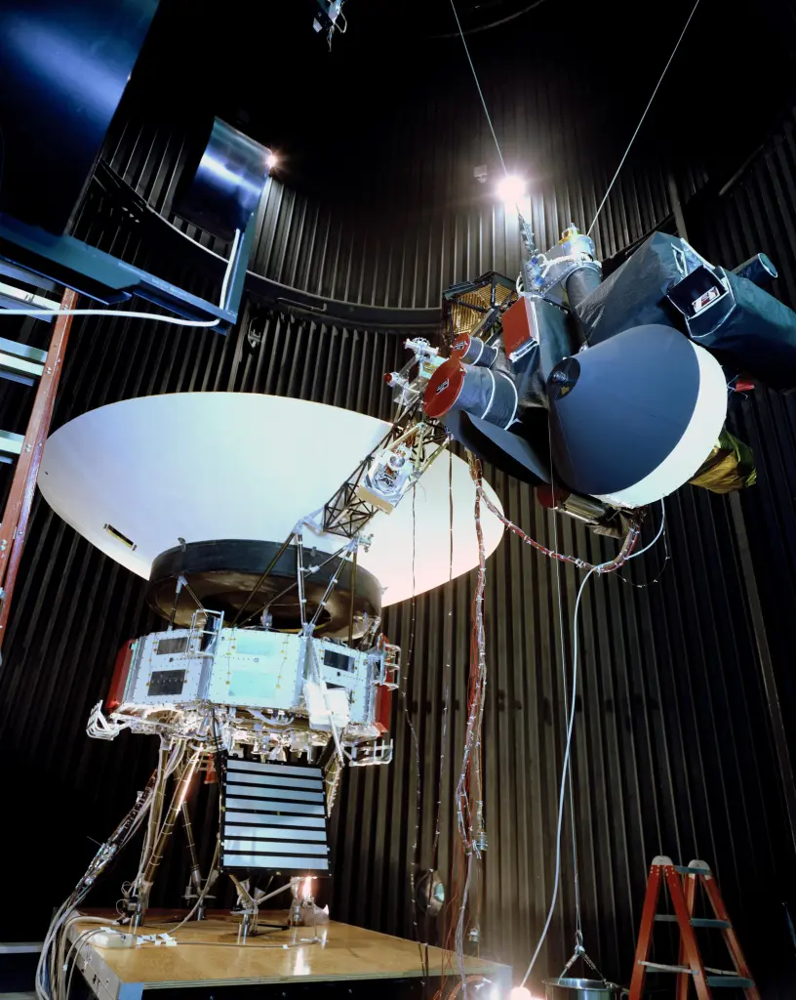
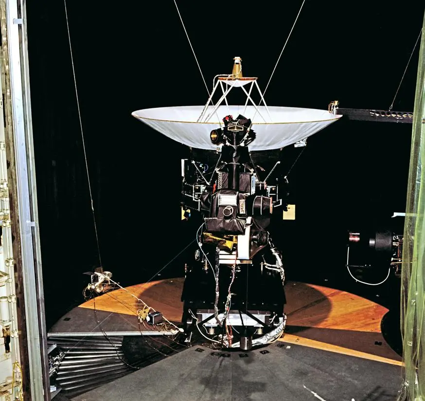
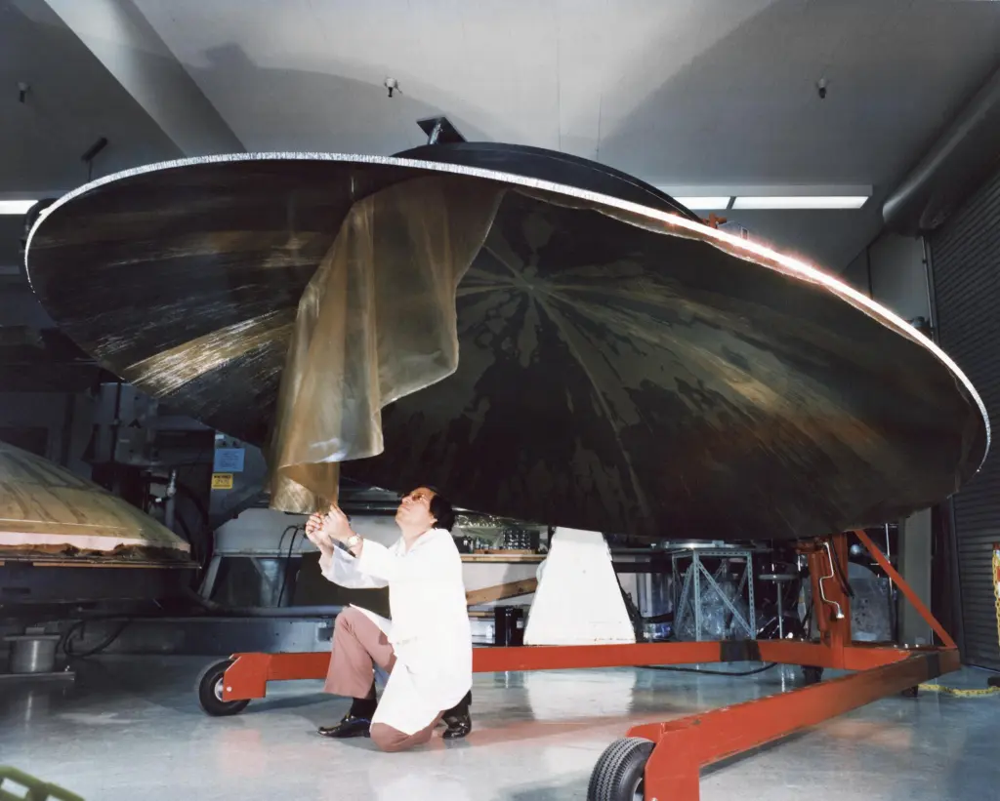

Who am I?

THE INTERSTELLAR MESSENGER
One little spacecraft. A journey beyond the Sun’s bubble.

A VOICE FROM FAR AWAY
Listen, read, and follow my journey one small step at a time.
Uses your browser’s speech voice when a recorded narration file is not installed.





SCIENCE SNAPSHOTS
Tap a card to reveal a little more.
A VERY LONG WAY FROM HOME
I am traveling through interstellar space. My radio messages still need almost a full day to reach Earth one way.
Still sending science dataEstimated distance from Earth · model based on NASA’s published reference value
COSMIC CURIOSITY
Voyager 1 carries a Golden Record with sounds, music, and greetings from Earth.
MISSION CONTROL MINI GAME
Help Voyager’s message find its way home. Remember: radio signals need time to travel!
Connect the Voyager signal to Earth by drawing a path across the stars.
Your signal is waiting...
FOLLOW THE FACTS
Mission facts and spacecraft history are based on official NASA resources. The spacecraft art on this page is an original CSS illustration.